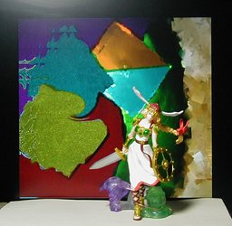
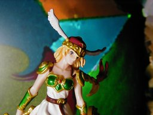

「namco」 × CAPCOM ワルキューレ


フィギュアのページがちょっと探したのですが見つかりませんでした。ちなみに元のゲームは PS2 NAMCO x CAPCOM です。高さは頭の羽を入れて 12cm、入れなくて 10cm ぐらいです。 以前のモリガンもそうですが、このシリーズはなかなかデキが良いと思います。ただ、一点、素材がすべて柔らかいプラスチックでできているという難点があります。棒などの固く見えるべき部分がはじめは曲がっていたり、このワルキューレがそうなのですが、エラく前傾姿勢だったりしました。 なお、写真では、前傾姿勢を、右足をサンドラに真鍮線でくくりつけることで矯正しています。 背景は物体の写真を GIMP で実験を兼ねていじくり回したものを使っています。 更新：2006-09-11 初公開：2006年09月11日 21:28:20 最新版：2006年09月14日 18:30:16
Trackbacks: 《Capcom vs SNK 2 - Action Figures Series 2: Mai》 from あまぞｎ通販ショップ - amaxoop2 キングオブファイターズ 受信： 2006-09-12 13:34:26 (JST) 《indossatrice campania》 from indossatrice campania icona duccio buoninsegna hotel atene sala riunioni irritazioni cutanee 受信： 2006-09-19 09:17:03 (JST) Comments: 更新：誤字修正。 投稿: JRF | 2006-09-14 18:31:40 (JST)
Links:
PS2 NAMCO x CAPCOM: http://namco-ch.net/namco_x_capcom/
以前のモリガン: http://jrf.cocolog-nifty.com/column/2006/05/post_8.html
GIMP: http://www.gimp.org/ (hbm)